← 部落格 × Special Project | PART2


只有 Base Color 貼圖被匯入


水仙花 Instance
Houdini 算圖

Unreal 算圖

第 4 週
第 4 週計畫：
-
在 Houdini 中測試靜態 USD variants
-
測試把靜態 USD 檔匯入 Unreal
USD 材質（Houdini 到 Unreal）
靜態模型
我用這個網路和 MaterialX 輸出 USD 檔。
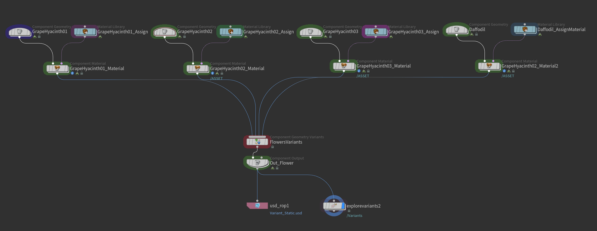
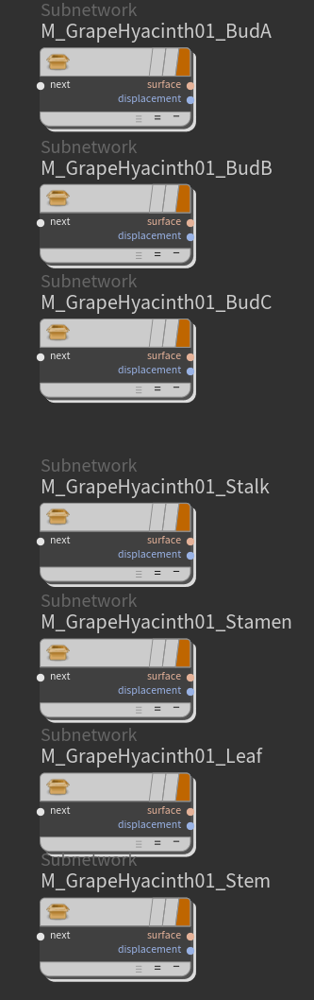
我試了兩種把 USD 檔匯入 Unreal 的方法。第一種是直接把 USD 檔拖進 Content Drawer，它會產生一個包含所有內容的資料夾，以及一個 UsdPreviewSurface 主材質。結果 Unreal 中的貼圖出現破綻，但取消勾選 Nanite 後就正常顯示。我也注意到只有 Base Color 貼圖被匯入，法線、粗糙度等其他貼圖都不見了。
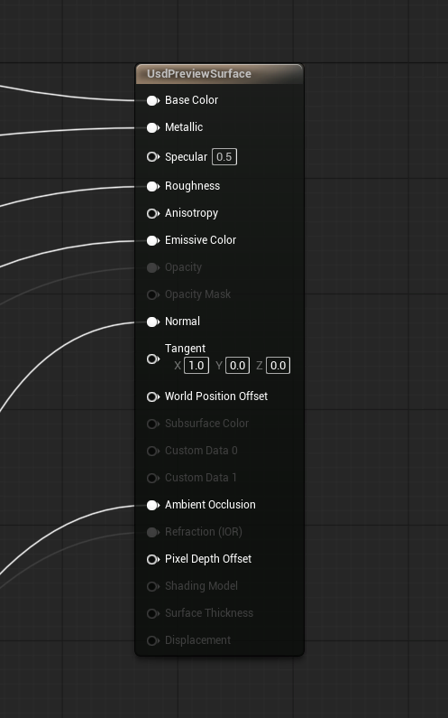
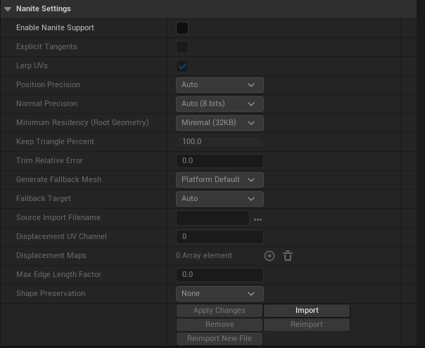
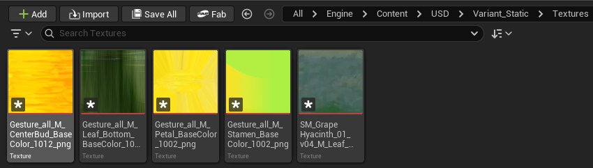
只有 Base Color 貼圖被匯入
只有 Base Color 貼圖被匯入
另外，如果只是把 USD 檔拖進 Unreal 的 Content Drawer，會看不到其他 variants
第二種是用 USD Stage Actor 匯入 USD 檔。問題是這裡看不到任何已指定的材質，但它們其實有成功匯入，因為我能找到材質與貼圖的路徑。貼圖也有同樣的問題：只有 Base Color 被匯入。
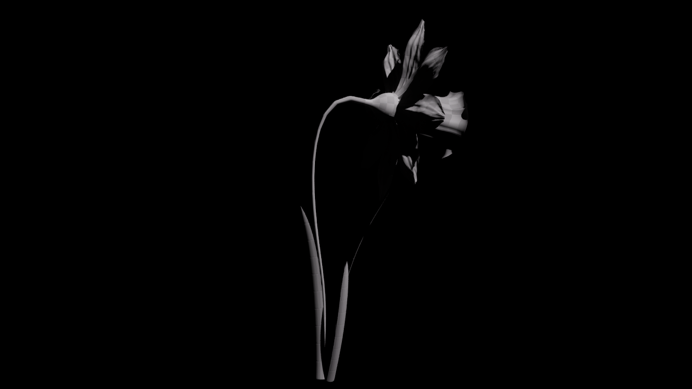
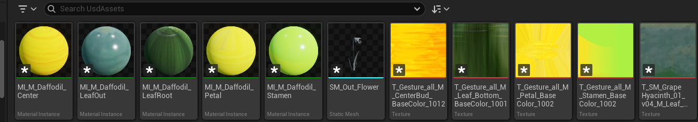
接著我嘗試只匯入一朵沒有 variants 的水仙花，結果一樣：仍然是灰色模型，只有 Base Color 貼圖成功匯入。
接著我嘗試用 UsdPreviewSurface 指定材質。這個材質沒有 SSS，匯入 Unreal 後同樣只有 Base Color 貼圖被匯入，模型仍然是灰色，因為材質沒有自動指定。
打開 USD Stage Editor 時，我可以切換不同的 variants。我在 Houdini 中是用 Color Correct 調整顏色，但由於一些限制，顏色無法傳到 Unreal，只有 Base Color 貼圖跟著模型過去。這些是全部的資產。
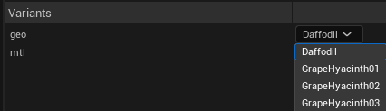
接著我用另一種方式把靜態水仙花輸出成 USD 檔。結果都沒有自動指定材質，但材質和 Base Color 貼圖都有一起帶過去。
Houdini 與 Unreal 中的水仙花 Instance
接著我在 Houdini 中做 instancing，把水仙花散佈在 HeightField 上。我散佈了 462 個點，並把有動畫的水仙花複製上去。
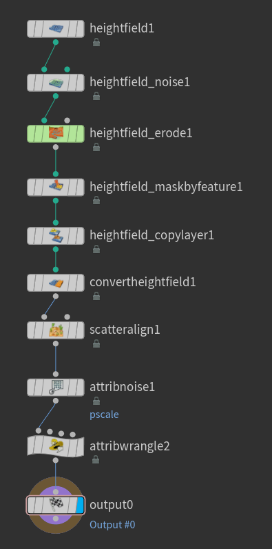
水仙花 Instance
Height Field 地形
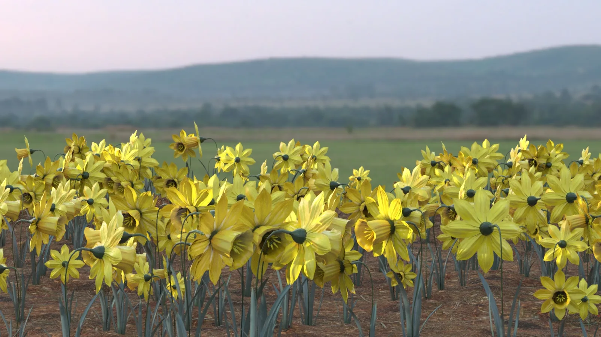
Houdini 算圖
把 USD 檔匯入 Unreal 時，材質還是沒有顯示，需要手動指定。不過其他部分，像擺放、圖層、所有位置與縮放都是正確的。
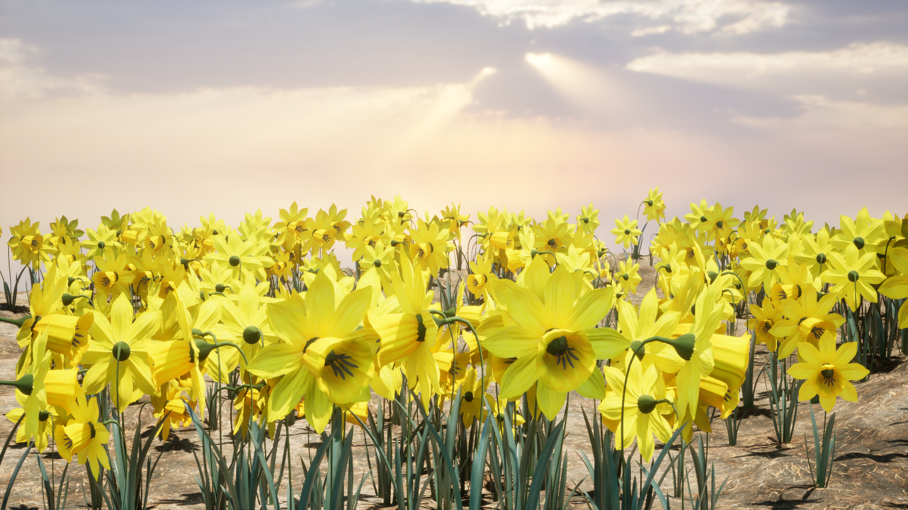
Unreal 算圖
接著我嘗試把水仙花匯入另一個 Unreal 專案。材質有跟著模型過去，但只有水仙花有材質，地面仍然沒有。同樣的問題依舊：只有 Base Color 貼圖被匯入。